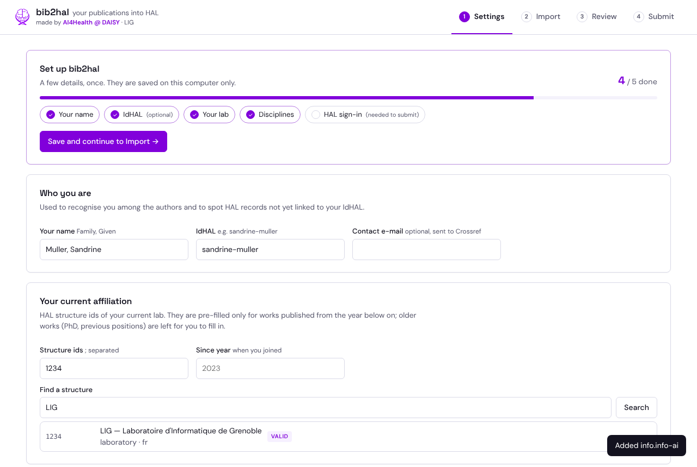
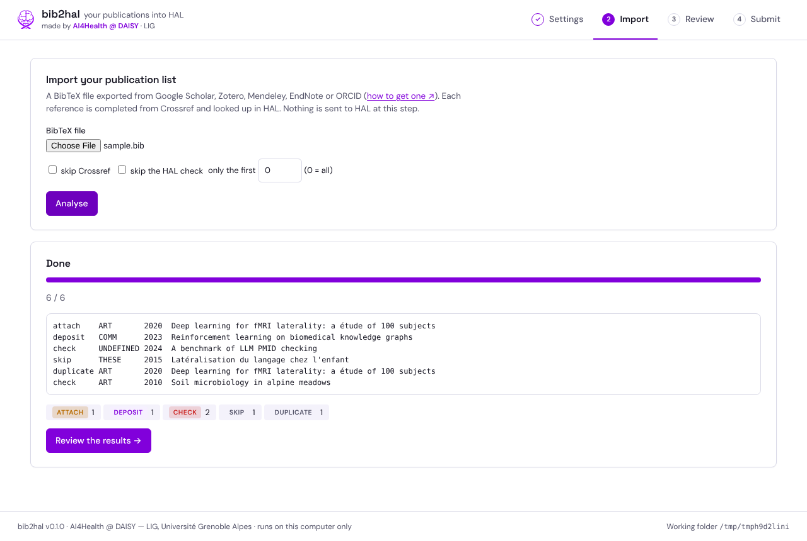
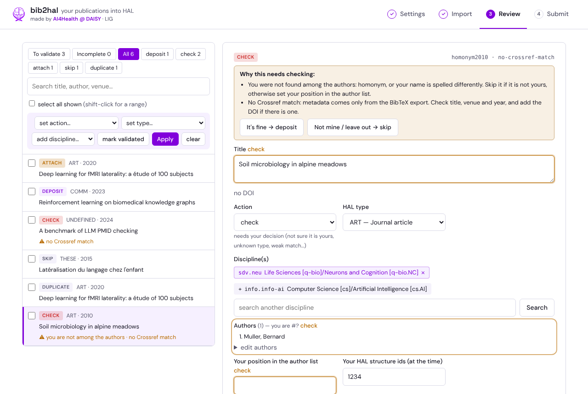
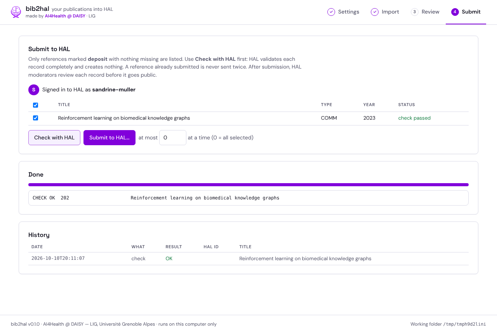

How to use bib2hal
About 30 minutes for a first import of a few dozen papers. You will need: your publication list as a
.bib file (how to get it), and your HAL login.
Start the application
- Download the file for your system from the download page.
- Double-click it. A small window opens and the interface appears in your web browser.
Keep the small window open while you work — closing it stops bib2hal.
The first time, your system warns that the application is not signed: on Windows click More info → Run anyway; on macOS right-click the file → Open → Open. Details.
- Your settings and files are kept in
Documents/bib2halon your computer.
1 · Settings (once)
The progress bar at the top shows what is left to fill in. Everything is saved on your computer only.
- Your name as it appears in your references, written
Family, Given(e.g.Muller, Sandrine), and your IdHAL (shown in your HAL account, e.g.sandrine-muller). bib2hal uses them to recognise you among the authors and to spot HAL records not yet linked to you. - Your labs: search each lab you have belonged to (current and past) by name or acronym and click the right result (prefer the ones marked VALID). Nothing is filled in automatically: in Review you will click, for each paper, the lab(s) you belonged to at the time.
- Your disciplines: search HAL's list (in French or English) and add the ones you publish in. For each paper, the closest one will be suggested.
- Sign in to HAL with your hal.science login. bib2hal checks it with HAL; tick Remember me to stay signed in on this computer (stored in your system keychain, never in a file).

The set-up checklist. "Save and continue to Import" becomes available once name, lab and disciplines are set.
2 · Import
- Choose your
.bibfile and click Analyse. - bib2hal completes each reference from Crossref and looks it up in HAL — about one second per reference, to stay polite with HAL's servers. Nothing is sent to HAL at this step.
- At the end you see how many references are to deposit, already in HAL (skip), in HAL but not linked to you (attach), duplicates, or to check.

3 · Review
The list on the left shows all your references; click To validate to see only what needs your attention. Click a reference to see it on the right.
| Action | Meaning | What to do |
|---|---|---|
| deposit | Not in HAL. | Check type, disciplines and your affiliation, then Validate & next. |
| check | Needs your decision. | Read the amber box: it says why (homonym, unknown type, no Crossref match…). Fields to verify are outlined in amber. Then It's fine → deposit or Not mine → skip. |
| attach | In HAL, not linked to your IdHAL. | Open the HAL link and add it to your publications in HAL (Mon espace → Mes publications). |
| skip / duplicate | Nothing to do. | — |

Red outline = required before deposit. Amber outline = please verify.
Tips
- Several at once: tick references on the left (shift-click for a range, or "select all shown"), then set an action, a type or a discipline for all of them.
- Affiliation at the time: click the lab(s) offered under "Your affiliation(s) for this paper", or search another one there.
- Full text: to attach a PDF you are allowed to share (usually your accepted manuscript), click Attach a PDF….
- Only the fields HAL needs are shown for each type: a thesis asks for the institution and supervisor(s), a conference paper for the conference city, country and date…
- Come back later: your review is saved as you go. To add papers, update your
.biband choose Analyse this file in Import: what you already reviewed is kept, only new references are analysed. Export as .bib gives you back your list with the DOIs found and your corrections. - Preview TEI shows exactly what will be sent to HAL.
4 · Submit
If HAL refuses some records, only those need another look: they appear under the HAL errors filter in Review, with an explanation of what to fix (for example, a consortium listed as an author, or a thesis without its supervisor).
- Click Check with HAL: HAL validates each selected record completely and creates nothing. Each line then shows "check passed" or HAL's error message.
- Click Submit to HAL… and confirm. Each record is sent under your account; a reference already submitted is never sent twice.
- HAL moderators review each record before it becomes public. Follow them in your HAL account (Mon espace → Mes dépôts).

Keep it up to date
Deposit new papers in HAL first, at acceptance (HAL then sends them to ORCID, and Google Scholar indexes HAL). Once or twice a year, export a fresh list and import it again in bib2hal to catch what slipped through.
Questions
Is my previous review lost if I import again?
No. The previous review is kept as a dated backup in your bib2hal folder.
bib2hal says HAL answered with a protection page.
HAL's servers are protected against robots. bib2hal stops immediately rather than insisting. Wait a few hours; if it persists, contact HAL support.
Can I use it without the interface?
Yes, everything is available from the command line: see the README.